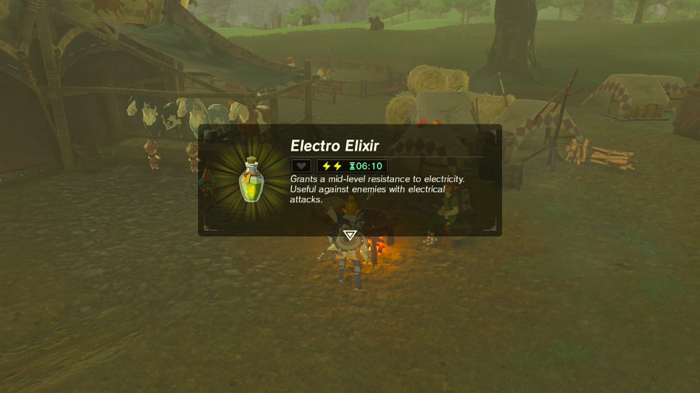

Electro Elixir

Description
Have you ever been on your way to steal something and had to deal with a pesky electric fence or taser? Well, with this quick and easy recipe you won't have to worry about that anymore! One sip of this sweet nectar and you'll be immune to voltage for a few minutes.
Ingredients
- Thunderwing Butterfly
- Yellow Lizalfos Tail
Steps
- Catch a thunderwing butterfly (You could try a firefly since they exist)
- Find a lizalfos and cut off its tail (or maybe substitute like an eel?)
- Throw it in a cauldron and stir for 5 seconds
- Voila! You're electric immune or nauseous from raw eel and the bug you ate.